TRXController
A modern remote control and log for the Whistler TRX scanners, on Windows, macOS and Linux. A large live display, the keypad, click-to-tune, and a log that names what you heard from the Ofcom register, RadioReference UK, RadioReference and the RSGB repeater list.
Free for personal, non-commercial use. Beta software, provided as is. Not affiliated with Whistler.
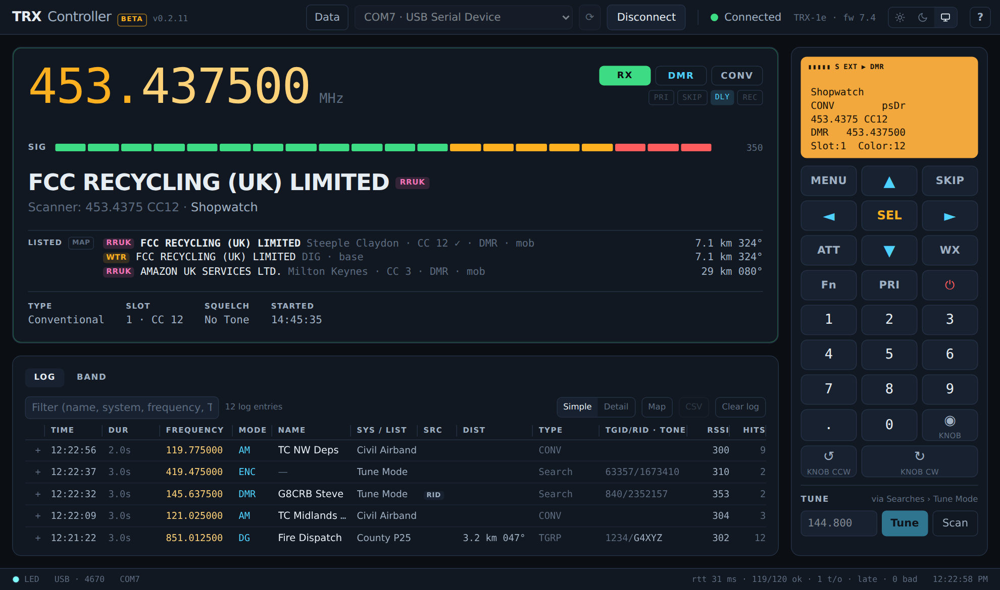
Everything Whistler's own program does, and the parts it gets wrong
The scanner plugs in over USB. TRXController drives it exactly as you would from the front panel, and adds the things a computer is good at: a display you can read from across the room, a log of every transmission, and identification.
Live display
Frequency, mode, signal strength, channel name, system or scanlist, talkgroup, radio ID, tone or colour code, slot and site, updated several times a second. The scanner's own LCD is there too.
Keypad and keyboard
The scanner's own amber display over every front-panel key, the knob included, on screen and on the keyboard. Arrows, Enter for SEL, Esc for MENU, the digits and the decimal point.
Click to tune
Type a frequency, click one in the log, or click a bar on the Band tab: the app walks the scanner's own menus into Tune Mode. One button takes it back to scanning.
The log
One entry per conversation: time, duration, frequency, mode, name, system, talkgroup, radio ID, tone, RSSI and hit count, with a filter and a CSV export that EZ Scan imports straight into the scanner. Kept between sessions.
Identification
Unnamed frequencies are named from the Ofcom Wireless Telegraphy Register, RadioReference UK, RadioReference and the RSGB repeater list, nearest first, with distance and bearing from you.
Confirmations
When you know who a channel is, say so once. The confirmation is keyed to the frequency and its tone or colour code, and outranks everything from then on.
Map
A second window with you and every candidate for a frequency pinned on OpenStreetMap, a line to the one the log chose with its distance and bearing, following the scanner or pinned to one log entry. Or a whole day of the log: one pin per placement with its entry count, filtered as the log is.
Band occupancy
A histogram of every frequency the scanner has visited this session, brighter where a signal was heard, so a busy band is obvious at a glance.
Light and dark
Follows the system theme or your choice. The scanner's display stays amber in both, because it is the scanner's display.
Update notices
The app checks GitHub for a newer release and shows a link in the top bar. It never installs anything by itself.
Latest release
Installers are built by GitHub Actions from the tagged source and attached to the release page. They are unsigned, so each operating system shows a first-run warning once; the steps below say what to click.
Windows
10 and 11, 64-bitmacOS
Apple silicon (M1 onwards)Linux
x64 and arm64Install, plug in, connect
No driver is needed on any platform: the scanner appears as a plain USB serial port. Pick your operating system.
- Download TRXController-Setup-version.exe. The installer is not code-signed, so Edge holds the download with "isn't commonly downloaded". Press the ⋯ beside it and choose Keep; in the dialog that follows, open the arrow on the Delete button and choose Keep anyway. The file then shows Open file. Chrome and Firefox show a similar "keep" prompt.
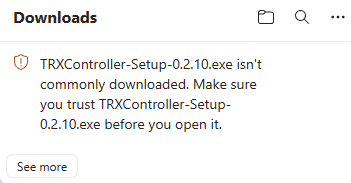
1. Edge holds the download. 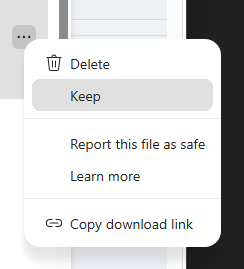
2. ⋯ › Keep. 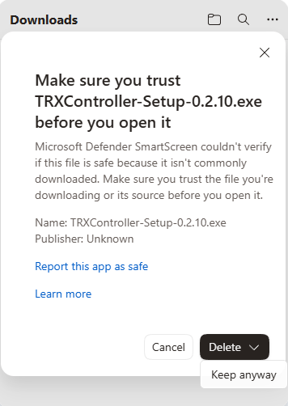
3. The arrow on Delete › Keep anyway. 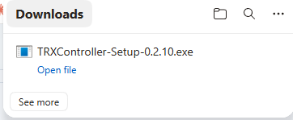
4. Open file runs the installer. The pictures show version 0.2.10; the file you download carries the current version number, and the steps are the same.
- Run it. SmartScreen shows "Windows protected your PC" the first time. Click More info, then Run anyway. It installs for your user only, under
%LOCALAPPDATA%\Programs\TRXController, and needs no administrator rights. Both warnings happen once. - Plug the scanner in over USB and switch it on. Windows uses its own USB serial driver; the scanner appears in the port selector as COMn · USB Serial Device.
- Launch TRXController. Pick the port in the top bar (the Whistler port is chosen automatically when it can be told apart; press ⟳ to rescan after plugging in) and press Connect.
%APPDATA%\TRXController. To update, run the new installer over the old one; everything is kept.Without the installer: the portable zip
If the installer is blocked on your machine (an "Unspecified error" creating the Start Menu shortcut is the usual sign, see the FAQ), download TRXController-version-win-x64.zip instead. Right-click it › Extract All to a folder of your choice (Documents, a USB stick, anywhere you can write to), then run TRXController.exe from that folder; right-click it › Pin to Start or Pin to taskbar if you want a shortcut. SmartScreen shows the same "Windows protected your PC" once: More info › Run anyway. It is the same app, so the log, settings and imported data live in the same %APPDATA%\TRXController folder and nothing needs re-importing. To update, extract the new zip over the old folder.
- Download TRXController-version-mac-arm64.dmg and open it. Drag TRXController into Applications, then eject the disk image.
- First launch: in Finder, open Applications, right-click (or Control-click) TRXController and choose Open, then Open again in the dialog. A plain double-click is refused for an unsigned app; right-click › Open only has to be done once.
- If macOS says the app "is damaged and can't be opened", that is the download quarantine flag, not a damaged file. In Terminal:
then launch it normally. On macOS 15 (Sequoia) and later you may instead find the app blocked in System Settings › Privacy & Security; scroll to the bottom of that page and choose Open Anyway.xattr -dr com.apple.quarantine /Applications/TRXController.app - Plug the scanner in over USB and switch it on, and here macOS stops: it never creates a serial port for the TRX, so the port selector stays empty however the scanner is connected. Not the lead, not a setting, and not something the app can work around; the reason is in the FAQ under macOS never shows a port for the scanner.
/dev/cu.usbmodem port ever appears and the app has nothing to open. A fix needs a change to the scanner's firmware from Whistler or a signed driver from Apple, neither of which exists. What does work: a Linux virtual machine on the Mac (UTM is free) with the scanner's USB device passed through to it, running the Linux arm64 AppImage. The macOS build is kept for the day one of those changes.~/Library/Application Support/TRXController. To update, drag the new app over the old one; everything is kept.Ubuntu, Debian, Mint (.deb)
- Download TRXController-version-linux-amd64.deb, or -arm64.deb for a Raspberry Pi on a 64-bit OS (Pi 3 onwards).
- Install it, which also pulls in the few libraries Electron needs:
sudo apt install ./TRXController-version-linux-amd64.deb - Give yourself access to serial ports. They belong to the
dialoutgroup:
then log out and back in (or reboot). Group changes only take effect on a new login. The package prints this reminder too.sudo usermod -aG dialout $USER - Plug the scanner in and switch it on. It appears as
/dev/ttyUSB0or/dev/ttyACM0. Launch TRXController from the applications menu, pick the port and press Connect.
Any distribution (AppImage)
- Download TRXController-version-linux-x86_64.AppImage (or -arm64.AppImage).
- Make it executable and run it:
If it complains about FUSE (older distributions, some containers), installchmod +x TRXController-version-linux-x86_64.AppImage ./TRXController-version-linux-x86_64.AppImagelibfuse2or run it with--appimage-extract-and-run. - Do the
dialoutstep above, then connect as above.
~/.config/TRXController. The RadioReference password goes in the desktop keyring (GNOME Keyring or KWallet); without one it is stored obfuscated rather than encrypted, and the Data dialog says so. To update, install the new .deb over the old one or replace the AppImage. To remove, sudo apt remove trxcontroller or delete the AppImage.The first thing you see
The help screen opens on first run, with the connection steps, the download links for the optional data files and the keyboard summary. It is behind the ? button in the top bar whenever you want it back.
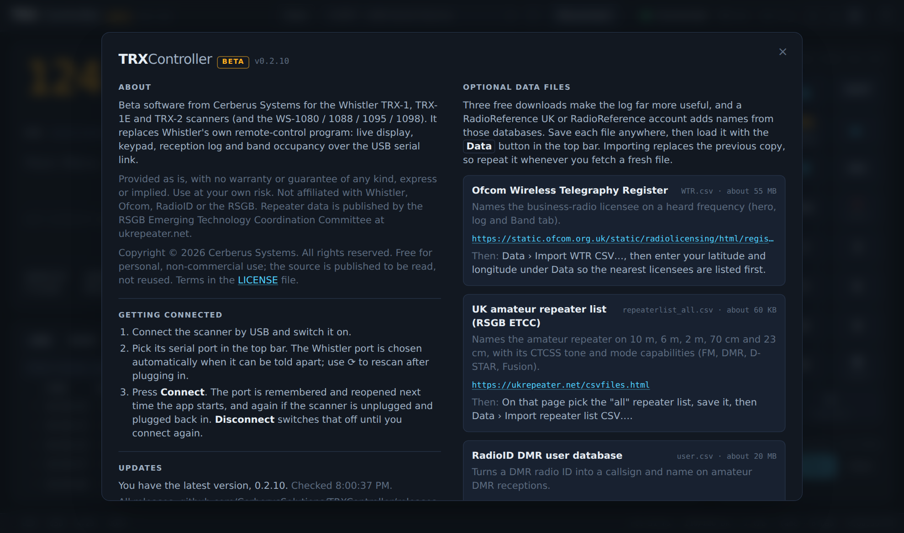
The screen
The frequency is the hero. Beneath it, the channel and the details the scanner reports; under that, a panel with the log and the band view; on the right, the radio: the scanner's own display over its keypad, and the Tune box.
The hero
The frequency in large amber digits with the mode, the signal type and the scanlist flags beside it. The signal meter follows the scanner's RSSI, with the raw value at the end. Then the channel name in large text with its system or scanlist beneath, and a parameter row: type, talkgroup, radio ID (resolved to a callsign and name when the DMR user database is imported), slot and colour code, squelch tone or NAC, site, and when the transmission started.
When the scanner has no name for the channel, or the name is only the frequency (a habit when logging channels for identification, such as 453.0625 CC15), the best listing takes its place with a pill saying which database it came from, and the scanner's own text is shown beneath. The Listed block shows what every enabled lookup knows about the frequency, nearest first, with the distance and bearing from your location and a tick against the entry whose tone or colour code matches the one the scanner is hearing.
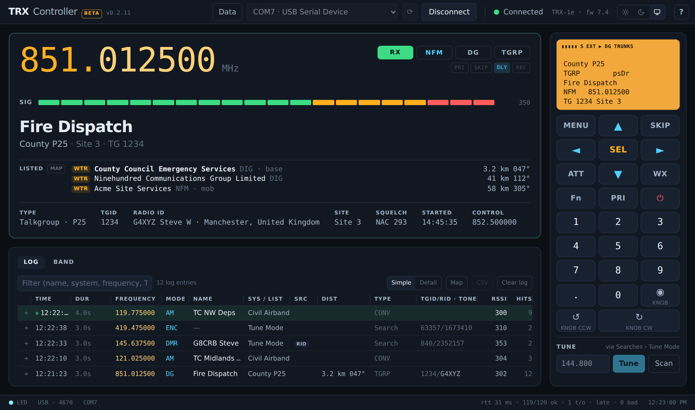
Tuning
The scanner has no "go to frequency" command, so TRXController does what you would do: it opens the menu, goes to Searches › Tune Mode, types the digits and presses SEL. Each step is checked against the scanner's display before the next key. The scanner snaps what is typed to its band plan: on the 8.33 kHz airband a channel name such as 126.595 is tuned as its carrier, 126.5917, and the app accepts that and reports the frequency the scanner settled on. Three ways to start it:
- Type a frequency in MHz into the Tune box under the keypad and press Tune.
- Click a frequency in the log.
- Click a bar on the Band tab.
Scan beside the Tune box takes the scanner back to scanning (Main Menu › Scan). While it loads its scanlists the scanner stops talking to the port for a few seconds; the top bar shows "Loading scanlists" and the keypad is held until it wakes, so nothing is queued into it. That is normal.
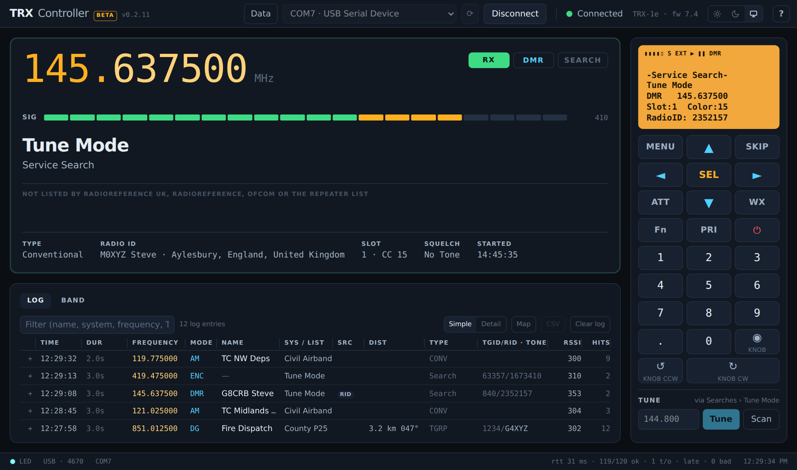
The log
A log entry is a period with the squelch open on one frequency. Bursts shorter than half a second are ignored, and a new opening on the same channel within ten seconds of the last reopens that row, so one conversation is one row: first heard stays, last heard and the call count move on, and the peak RSSI is kept. Rows are ordered by last activity, open rows first, and live between sessions.
- Filter matches the name, system, frequency, talkgroup or radio ID.
- Simple / Detail switches between the one-name view and a column per source (Scanner, List, WTR, RRUK, RRDB, UKR, Sys), so a row where the scanner and a register disagree is easy to spot.
- + at the left of a row unfolds every candidate the lookups offered for that frequency, with a confirm button beside each, and the traffic heard on the frequency grouped by tone or colour code and talkgroup.
- Dist shows the distance and bearing of the identity the row shows, in km or miles (the toggle is in the Data dialog).
- Src says which lookup named the row: blank for the scanner's own programming, otherwise a pill (see below).
- The table loads the newest 500 entries and fetches 500 more as you scroll towards the bottom, up to 5,000. Only the rows in view are drawn, so a long session stays quick.
- CSV saves the frequencies shown as an EZ Scan import file: one object per frequency and tone or colour code, EZ Scan's own columns first, then every source's answer, the distance, the bearing and the full candidate list. How to import it. Clear log empties it.
- Drag a column divider to resize it; double-click the divider to reset. The view and the widths are remembered.
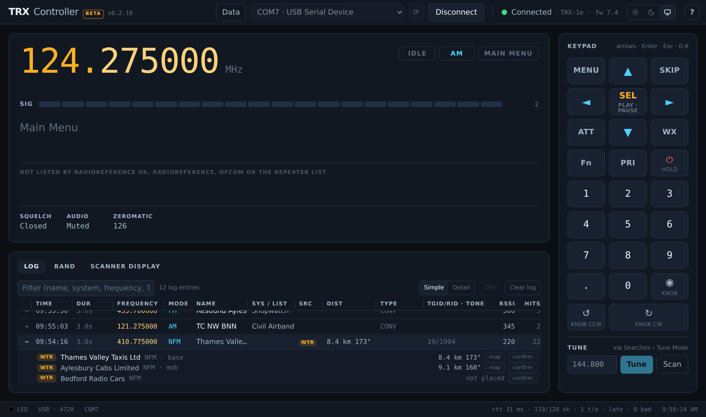
The map
The map button beside the hero's Listed block, or beside any candidate in a log entry that has a position, opens a second window (it can sit on another screen). Your location from the Data dialog is the blue dot; every candidate the lookups offered for the frequency is a pin coloured by its source, and a dashed line runs to the one the log chose, labelled with the distance and bearing. Click a pin for its card and to move the line to it. Opened from the hero the map follows the scanner: it moves to each station the scanner stops on, or a frequency it has sat on for a second and a half, and stays put while the scanner sweeps, so a scan does not throw the map about; opened from a candidate it stays pinned to that entry with the line drawn to that candidate. F toggles: while following it holds the entry on show, while held Follow (or F) lets go. Dock (or D) parks the map against the side of the main window that has room, square and as tall as the main window (or as wide as the room allows), and keeps it there as the main window moves; with no room either side the two share the screen. Drag the map away, or press Dock again, to set it free. It reopens where it was, docked or not. Keyboard: + and − zoom, the arrows pan, A fits everything in, Z centres on you, D docks; ? in the window's bar lists them, with what each pin colour means.
Read the pins with their source in mind. A WTR pin is the Ofcom licence holder, which is often a reseller's address rather than the transmitter (a Buckinghamshire dealer's licence can cover a shop's radios three miles away). RRUK and RRDB pins are the sites those databases list; a UKR pin is the repeater itself. The card under each pin says which. The tiles come from OpenStreetMap, so the map needs an internet connection; without one the pins still show where things are relative to you.
The Log view: a day on the map
The log's Map button, or L in the map window, turns the same map into one day of the log: every entry that day with a position becomes a pin at its placement, the number on the pin is how many entries the log placed there, its colour is the source behind the newest name, and its card lists the entries with their times and frequencies (click one to draw the line to it). The bar picks the day ([ and ] step back and forward, never past today) and carries the log's filter, so taxi shows where every taxi firm heard that day sits and 453.0625 where one frequency has been placed. Today's view follows the log as entries arrive. Live (or L again) goes back to following the scanner. Only entries with a position appear; the bar counts the rest, and entries from before the app stored positions (0.2.11) have none.
Band tab
One bar per frequency the scanner has visited in Scan, Search, Sweeper or Monitor mode. Height is the peak RSSI, cyan fading with age, amber where the squelch ever opened, a dashed marker at the current frequency, and a tooltip on hover. It is a visual aid, not a measurement: the scanner's RSSI is uncalibrated. Reset starts again; nothing here is saved.
The scanner's display
The amber screen over the keypad is the scanner's own six-line display with its icon strip, drawn as the scanner draws it, so the app looks like the radio it is driving. It is what the app reads to follow the menus, so it is also the place to look when something seems stuck. It goes dark when no scanner is connected or the scanner is switched off. Ctrl+Shift+D (Cmd on a Mac) adds a Debug tab beside Log and Band with the display's raw bytes to copy into a report.
Theme
The sun, moon and monitor buttons in the top bar pick light, dark or the system theme. The window chrome follows.
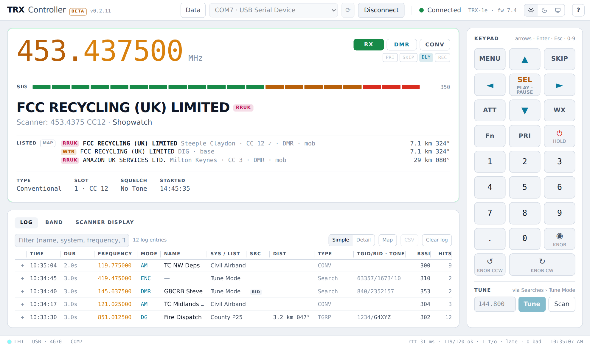
Naming what you heard
The scanner only knows what you programmed into it. TRXController fills the gaps from four sources: three free files you import once, and two online databases you can sign up to. Set them up under the Data button.
| Source | What it gives | How to set it up |
|---|---|---|
| WTR Ofcom Wireless Telegraphy Register | The licensee on a business-radio frequency near you, with distance and bearing. Not in it: PMR446, Simple UK / Site licences, amateur, MoD and Home Office. | Download WTR.csv (about 55 MB), then Data › Import WTR CSV. Set your latitude, longitude and radius under Data so the nearest come first. Free. |
| RRUK RadioReference UK | UK-centric, Ofcom-backed listings filtered to your area: licensee, place, distance, bearing and the colour code or tone, which the app matches against what the scanner is hearing. | Sign up at radioreferenceuk.co.uk, generate an API key in your dashboard, paste it under Data › RadioReference UK and press Test: lookups run only once the key has passed a test, and pause with the server's reason shown if RRUK ever refuses it. Updating from before 0.2.14 with a key already saved? Press Test once; lookups stay off until the key has its tick. Optionally a postcode; otherwise your coordinates and radius are used (up to RRUK's 50 miles). The key is yours alone, stored encrypted on your machine. |
| RRDB RadioReference.com | Trunked systems, sites and talkgroup names, and conventional channel descriptions, from the RadioReference database, filtered to your area. | Data › RadioReference: your radioreference.com username and password (a premium subscription is required for API access) and your region. The password is stored encrypted. |
| UKR RSGB repeater list | The amateur repeater on 10 m, 6 m, 2 m, 70 cm and 23 cm: callsign, place, distance, CTCSS tone and FM / DMR / D-STAR / Fusion capability, the one whose tone matches first. | On ukrepeater.net pick the "all" repeater list (about 60 KB), then Data › Import repeater list CSV. Free. |
| RID RadioID DMR users | Turns a DMR radio ID into a callsign, name and town. | Download user.csv (about 20 MB), then Data › Import radioid.net CSV or JSON. Free. |
Importing replaces the previous copy, so repeat it whenever you fetch a fresh file. Online lookups happen once per frequency, when the squelch first opens on it, and are cached for a month.
Lookup order
Data › Lookup order sets which source is asked first when several know a frequency. The scanner's own programming always wins; a lookup only fills in a name or system the scanner did not have. Two exceptions: a RadioReference talkgroup name still wins over a licensee (registers know no talkgroups), and a candidate whose tone or colour code matches the one the scanner shows is listed first and names the row whatever the order, while one whose code differs sinks. Untick a source to ignore it while it is offline or returning junk.
Confirming an identity
Unfold a log row, press confirm beside the right candidate, or type a name none of them offer. The confirmation is keyed to the frequency and the tone or colour code the row showed (and the talkgroup on a trunked object), so co-channel users stay apart. From then on it outranks every lookup and the scanner's own programming: every log entry it fits is renamed with a green CONF pill, new entries take it as they arrive, and the hero shows it while the scanner is on the frequency. remove withdraws it. Data › Confirmed identities lists them all.
The Src column
| WTR | Named from the Ofcom register |
| RRUK | Named from RadioReference UK |
| RRDB | Named from RadioReference.com |
| UKR | Named from the repeater list |
| RID | The only name is the radio ID's callsign |
| MEM | Too brief to show the object; named from an earlier log entry on the frequency |
| CONF | An identity you confirmed |
| blank | The scanner's own programming |
Scan timeout
Data › Scan timeout (off, 10 s to 2 min) stops a dead carrier or a stuck beacon eating the session: after that long on one carrier in Scan mode the app presses ► for you and scanning resumes. Searches and Tune Mode are never nudged, since sitting on a signal is what they are for.
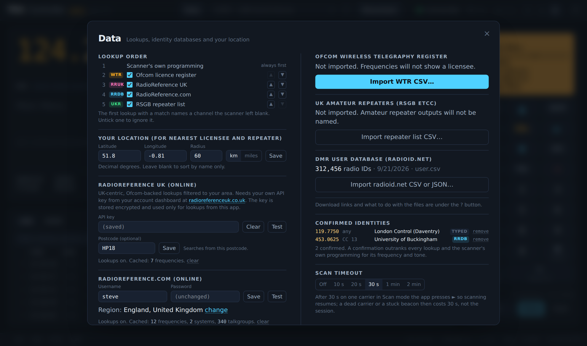
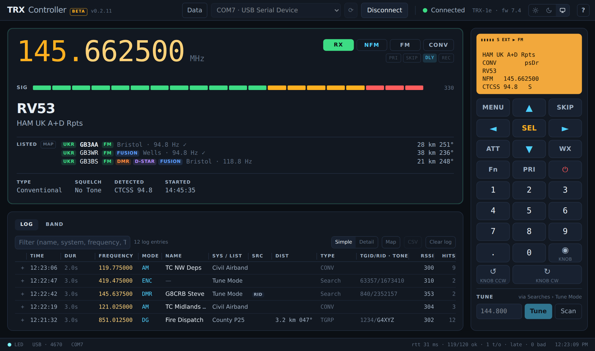
Shortcuts
The keypad follows the keyboard while the scanner is connected and no dialog or text field has the focus. Hover a key on screen for its shortcut.
| Scanner key | Keyboard |
|---|---|
| ▲ ▼ ◄ ► | ↑ ↓ ← → |
| SEL (play / pause) | Enter or Space |
| MENU | Esc or M |
| SKIP | S or Backspace |
| ATT · WX · Fn · PRI | A · W · F · P |
| 0 – 9 and . | 0 – 9 and . |
| Scanner key | Keyboard |
|---|---|
| Knob press | K |
| Knob anticlockwise | [ or Page Up |
| Knob clockwise | ] or Page Down |
| Power | Click ⏻ twice within 2.5 s (no shortcut, on purpose) |
| Diagnostics | Ctrl+Shift+D (Cmd on a Mac) |
| Help | The ? button; Esc closes it |
Questions and troubleshooting
Which scanners does it work with?
The Whistler TRX-1, TRX-1E and TRX-2, and the WS-1080, WS-1088, WS-1095 and WS-1098, which share the same remote-control protocol. It was developed and tested on a TRX-1E with CPU firmware 7.4.
No serial port appears in the top bar.
Check the scanner is switched on and the cable carries data (some USB leads are charge-only), then press ⟳ to rescan. On Linux, make sure you are in the dialout group and have logged in again since adding yourself. On a Mac no port ever appears, whatever the lead or hub: see macOS never shows a port for the scanner below.
Edge says the download "isn't commonly downloaded". Is it safe?
Yes. Edge's SmartScreen holds any installer that is not code-signed and has not yet been downloaded by many people, whatever it contains. Press the ⋯ beside the download and choose Keep. In the "Make sure you trust" dialog, open the arrow on the Delete button and choose Keep anyway. The download then offers Open file. Chrome ("This file may be dangerous" › Keep) and Firefox behave the same way. If you want to check the file first, it is built by GitHub Actions from the tagged source and the release page lists its size.
Windows says "Windows protected your PC" when the installer runs.
The same reason: the installer is not code-signed. Click More info, then Run anyway. It only happens the first time.
The map's Log view shows fewer pins than the log has entries.
A pin needs a position, and an entry only has one when a lookup placed it: a licence, a repeater, a RadioReference UK entry or a RadioReference site or county. Entries the scanner named on its own, or that nothing could place, are counted in the bar but not pinned, as are entries logged before the app began storing positions (0.2.11). Several entries at the same placement share one pin; its number is the count and its card lists them.
The map window is blank, or says its tiles are not loading.
The map draws its tiles from OpenStreetMap over the internet; offline, or behind a proxy that blocks it, only the pins and the line show. The pins are placed from the lookups' own coordinates (the licence, the repeater, the site or the county centre), so an entry none of them could place has no pin, and the window says so. Set your location in the Data dialog to see yourself and the line to each site.
Can I get what I have heard into the scanner without retyping it?
Yes. The log's CSV button writes a file in the format of EZ Scan's own conventional-object export, so use EZ Scan's CSV import and pick it. You get one object per frequency and tone or colour code (two users sharing a channel become two objects; twenty conversations with one become one), named from the log and cut to EZ Scan's 16-character alpha tag (else the scanner's own label such as "453.0625 CC12", else the frequency), with the mode, CTCSS, DCS or NAC, the DMR colour code and slot filled in. The scanlist column is left empty, so EZ Scan files the new objects under its default import scanlist (normally scanlist 1, and you can change that default in EZ Scan), then write to the scanner as usual. The app's own columns (first and last heard, entries, calls, peak RSSI, what every source said, distance, bearing, candidates) follow EZ Scan's in the same file, each named trx_… so EZ Scan's importer, which matches columns by name, ignores them; a spreadsheet reads the lot. (The count column was trx_receptions in 0.2.11 and is trx_entries from the next release.) Trunked talkgroups are logged on their voice frequency, so they come out as conventional objects too.
The installer stops with "Unspecified error" and a path ending in TRXController.lnk.
The installer has copied the app and is failing at its last step, creating the Start Menu shortcut under AppData\Roaming\Microsoft\Windows\Start Menu\Programs. Windows reports "Unspecified error" (in Spanish "Error no especificado", and so on) when something stops the shortcut being written. The usual culprit is Controlled folder access (Windows Security › Virus & threat protection › Ransomware protection), which silently blocks programs it does not know; its "Block history" will list the installer, and allowing it there, or turning the setting off for the install, fixes it. A third-party antivirus can do the same; check its log. Rarely, the Start Menu folder itself has broken permissions, which shows up when you cannot create a shortcut there by hand either.
Two ways past it. The app is very likely installed already: open %LOCALAPPDATA%\Programs\TRXController and run TRXController.exe, then pin it to Start yourself. Or skip the installer altogether with the portable zip from the Download section: unzip it anywhere and run TRXController.exe. Both use the same data folder, so nothing is lost either way.
macOS never shows a port for the scanner. Why?
Because of how the TRX presents itself over USB, not anything on the Mac. A standard USB serial device declares two interfaces, a control interface and a data interface carrying the actual bytes. The TRX declares only the control interface and puts everything on it (checked on a TRX-1E on 21 Sep 2026 with ioreg: interface 0 is the SD card, interface 1 is CDC control, and there is no data interface, scanner on or off). Windows works because Whistler's driver binds Microsoft's serial driver straight to that interface; Linux works because its driver has a case written for exactly this single-interface layout; Apple's driver binds the control half, looks for a data interface, finds none and creates no port. So ls /dev/cu.* shows only the Mac's own ports, the app's port box stays empty, and no setting, cable, hub or third-party driver changes that. Nor can the app go round it: macOS has already claimed the interface, and a kernel or DriverKit driver needs Apple signing the project does not have. A firmware update from Whistler declaring the data interface would fix it. Until then the working route on a Mac is a Linux virtual machine (UTM is free on Apple silicon) with the scanner's USB device passed through, running the Linux arm64 AppImage; Linux's driver handles the layout and the app works as on any Linux machine.
macOS says the app is damaged or from an unidentified developer.
Right-click the app and choose Open for the "unidentified developer" case. For "damaged", clear the quarantine flag with xattr -dr com.apple.quarantine /Applications/TRXController.app, or use Open Anyway at the bottom of System Settings › Privacy & Security on macOS 15 and later. The app is unsigned and not notarised; the file itself is fine.
The top bar says "Scanner off".
The scanner told the app it has been switched off (it sends a notice as it powers down). Switch it back on at the scanner and the app carries on from the next reply; nothing needs reconnecting. The keypad is held meanwhile, since the scanner would queue any presses.
I typed 126.595 and the scanner tuned 126.591666. Why?
Because that is the frequency. Civil airband channels above 118 MHz are spaced 8.33 kHz apart, and their names are rounded: the channel called 126.595 has its carrier at 126.591667 MHz, its neighbours at 126.600 and 126.608333. Any scanner or airband radio does the same; the TRX snaps what you type to its band plan and shows the carrier. The app accepts that and reports the frequency the scanner settled on, so the green "Tuned to" message reads 126.5917. If it lands more than a few kilohertz away, the entry was outside the raster for that band and the scanner picked the nearest valid step.
The top bar says "Loading scanlists" and the keypad is greyed out.
Right after a mode change, and for several seconds while it loads its scanlists, the scanner stops answering the port but remembers every request and answers them all when it wakes. The app waits rather than piling keys into that queue. With two large scanlists this can take over a minute. It is the scanner, not the link.
The scanner's name and the register disagree. Which is right?
Only you can say. The Detail view of the log shows every source's answer side by side, and unfolding the row shows the traffic heard on the frequency by tone or colour code. When you know, confirm the right one; the confirmation then outranks both, and Data › Confirmed identities lists it so you can reprogram the scanner at leisure.
Why is a channel named by its frequency showing a different name?
An object named only by its frequency, with or without a code noted after it (453.0625, 453.0625 CC15, 167.300 94.8), counts as unnamed, so the lookups name it. The scanner's own text is still shown beneath the name in the hero and in the Scanner column of the Detail view.
RadioReference UK lookups stopped after updating.
Since 0.2.14 the app only asks RRUK with a key that has passed its Test, so a wrong key is never sent more than once (RRUK asked for this after clients kept retrying on a rejected key). A key saved by an earlier version counts as untested: open Data › RadioReference UK and press Test once. The line under the postcode reads "Key not tested yet" until then and "✓ Key tested" after. If RRUK refuses a request later, the same place shows their message: a rejected key means enter the right one and Test again; a locked IP address or a rate limit pauses lookups for 15 minutes and is for RRUK support to clear.
Does RadioReference work without a premium account?
No. RadioReference's web service needs a premium subscription; the app uses your login and never stores the password in clear. RadioReference UK is a separate, UK-run database with its own free API key from your dashboard there. The Ofcom register, the repeater list and the RadioID database are free files.
What leaves my computer?
Nothing, unless you switch it on: RadioReference UK and RadioReference lookups send the frequency (and your area) to those services when you have entered a key or a login, and the update check fetches the latest release number from GitHub. The log and the imported files stay on your machine.
Where is my data, and how do I move it?
In %APPDATA%\TRXController on Windows, ~/Library/Application Support/TRXController on macOS and ~/.config/TRXController on Linux: the log (trx-log.sqlite), the settings and the imported databases. Copy the folder to move everything to another machine of the same platform. Updates keep it.
Can I build it myself?
Yes, the source is on GitHub with the build steps in the README. Note the licence: the code is published to be read, not reused, and the binaries are free for personal, non-commercial use.
Something is wrong. How do I report it?
Open an issue on GitHub with the app version (top bar), the scanner model and firmware (shown beside "Connected"), what you did and what happened. For display or tuning problems, Ctrl+Shift+D adds a raw-bytes dump with a copy button to the Scanner display tab; paste that in.